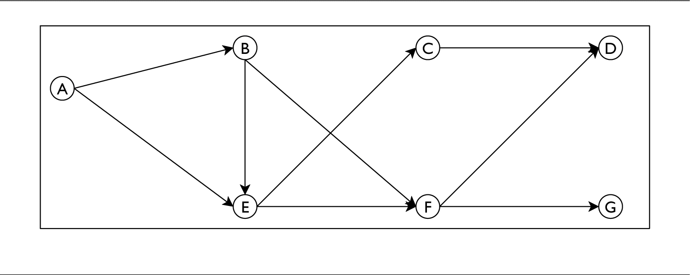
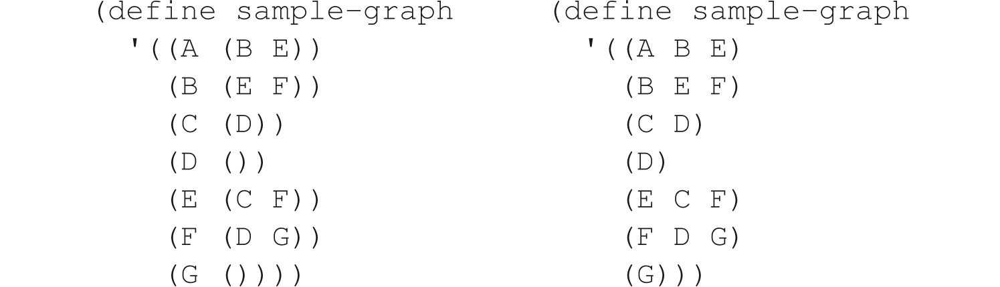
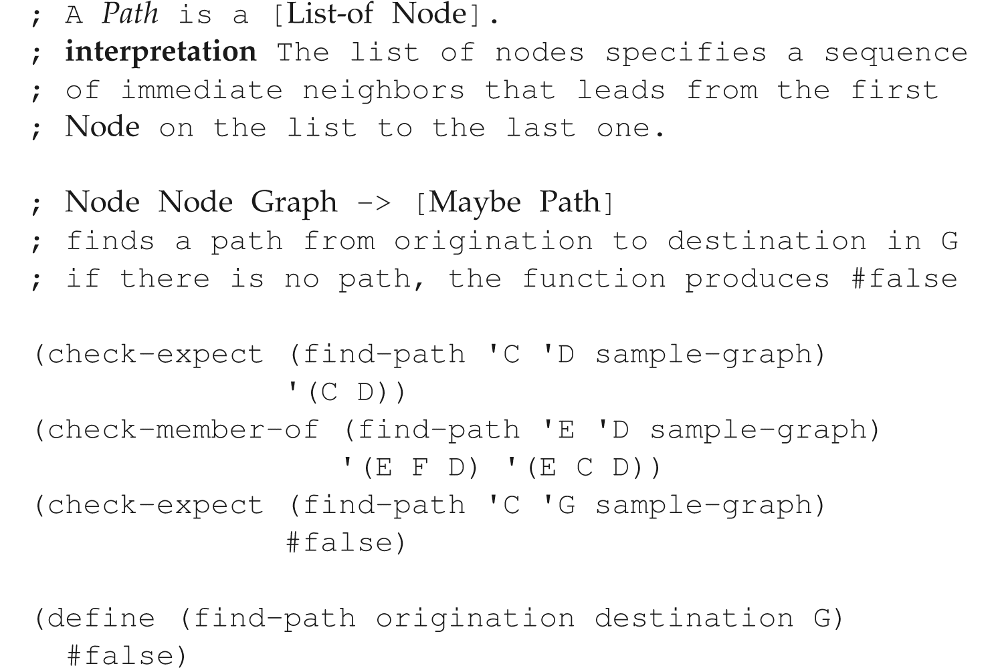
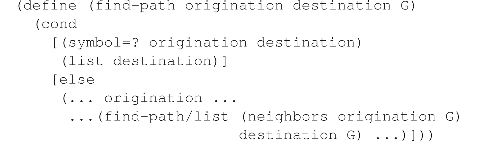
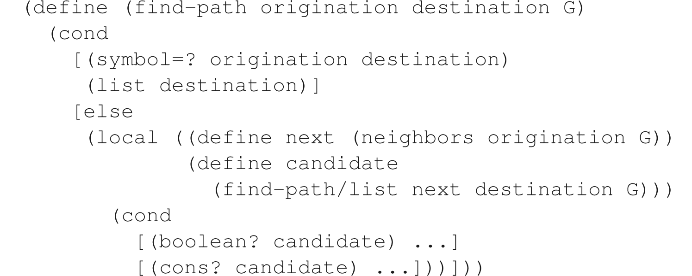
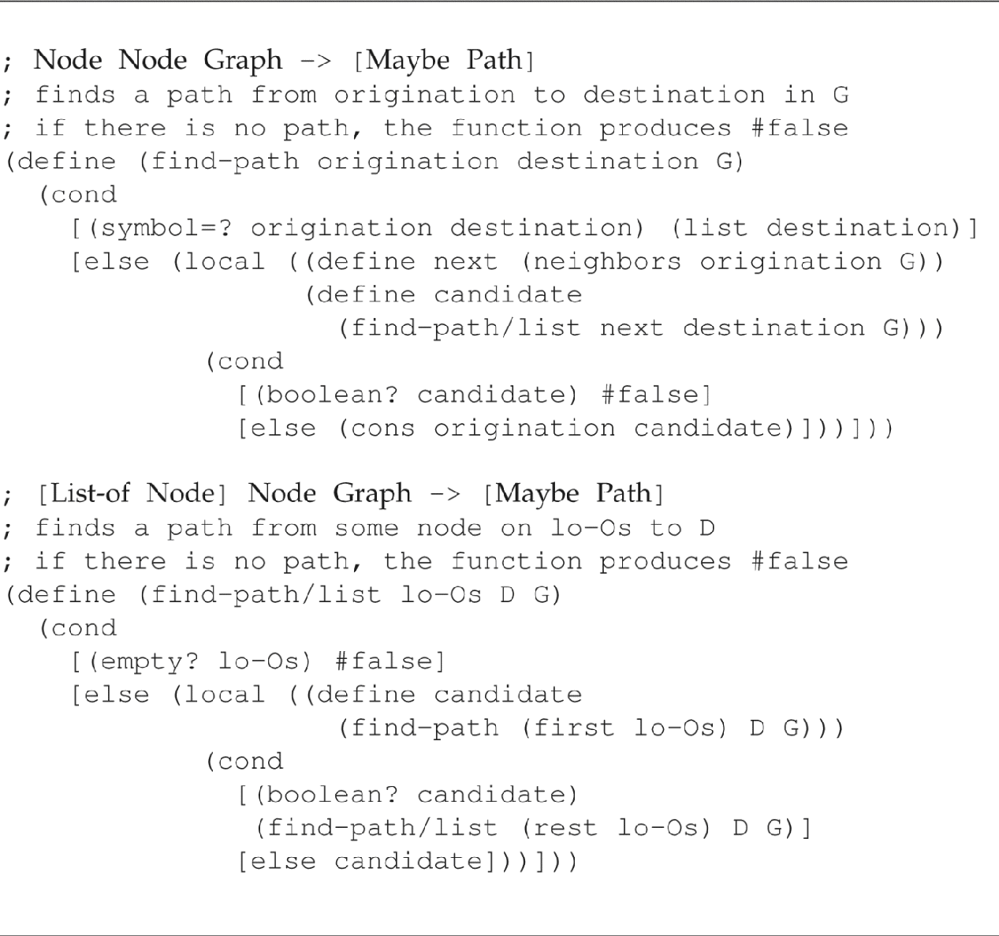
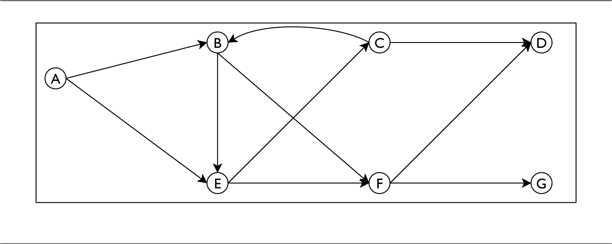
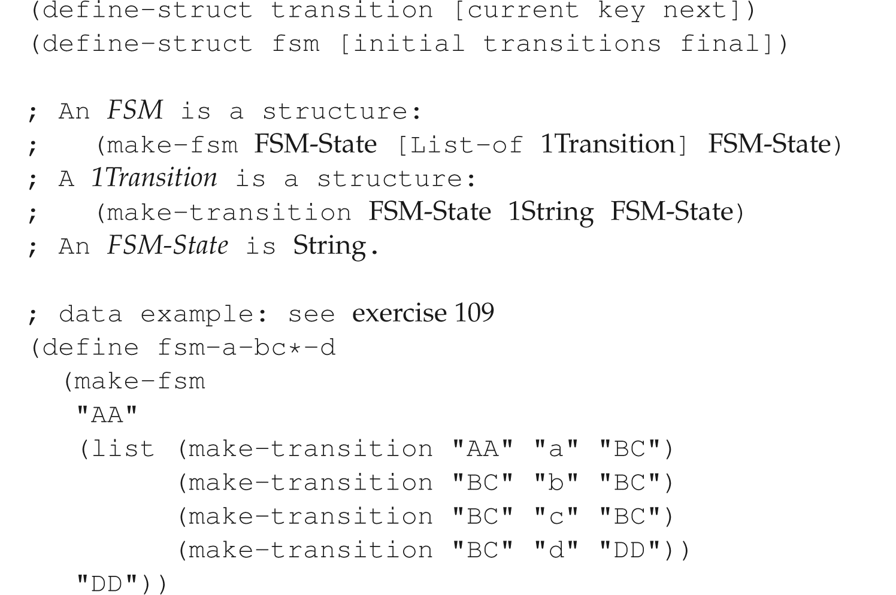
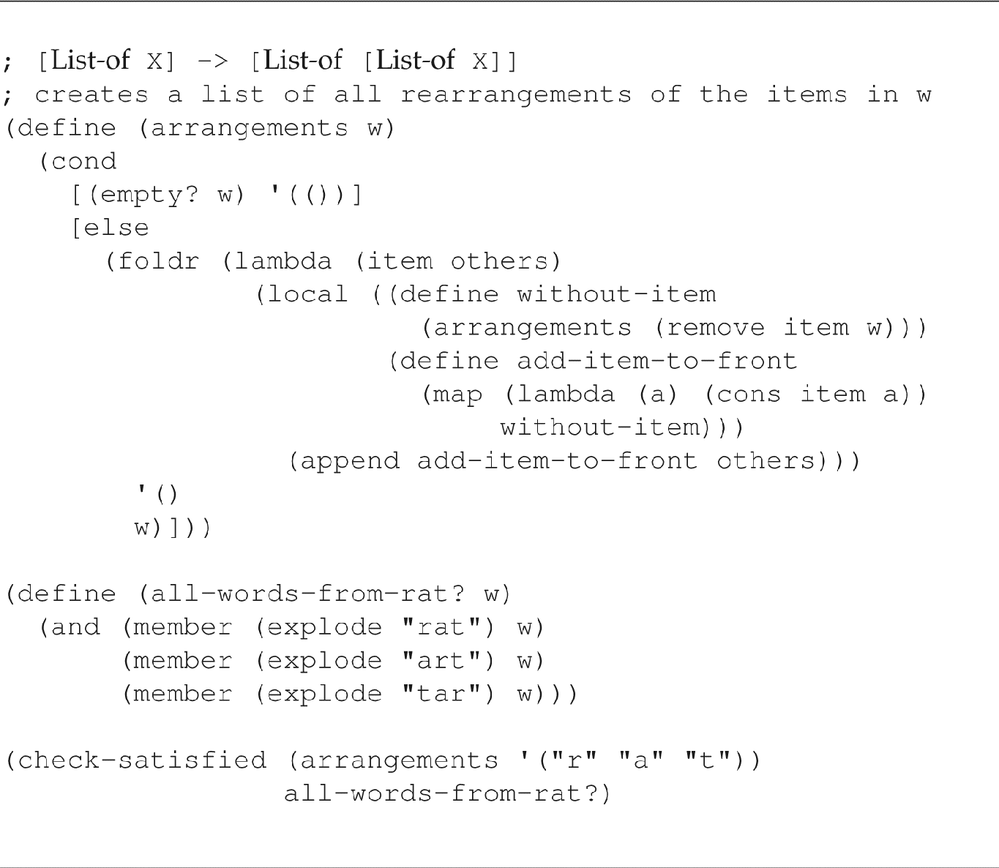

29.1 Traversing Graphs
Graphs are ubiquitous in our world and the world of computing. Imagine a group of people, say, the students in your school. Write down all the names, and connect the names of those people who know each other. You have just created your first undirected graph.
Social scientists use such algorithms to figure out the power structure in a company. Similarly they use such graphs to predict the probable activities of people, even without knowledge of the content of their emails.
Now take a look at figure 168, which displays a small directed graph. It consists of seven nodes—the circled letters—and nine edges—the arrows. The graph may represent a small version of an email network. Imagine a company and all the emails that go back and forth. Write down the email addresses of all employees. Then, address by address, draw an arrow from the address to all those addresses to whom the owner sends emails during a week. This is how you would create the directed graph in figure 168, though it might end up looking much more complex, almost impenetrable.

Figure 168: A directed graph
In general, a graph consists of a collection of nodes and a collection of edges, which connect nodes. In a directed graph, the edges represent one-way connections between the nodes; in an undirected graph, the edges represent two-way connections between the nodes. In this context, the following is a common type of problem:
Sample Problem Design an algorithm that proposes a way to introduce one person to another in a directed email graph for a large company. The program consumes a directed graph representing established email connections and two email addresses. It returns a sequence of email addresses that connect the first email with the second.
Mathematical scientists call the desired sequence a path.
Figure 168 makes the sample problem concrete. For example, you may wish to test whether the program can find a path from C to D. This particular path consists of the origination node C and the destination node D. In contrast, if you wish to connect E with D, there are two paths:
• send email from E to F and then to D.
• send it from E to C and then to D.
Sometimes it is impossible to connect two nodes with a path. In the graph of figure 168, you cannot move from C to G by following the arrows.
Looking at figure 168 you can easily figure out how to get from one node to another without thinking much about how you did it. So imagine for a moment that the graph in figure 168 is a large park. Also imagine someone says you are located at E and you need to get to G. You can clearly see two paths, one leading to C and another one leading to F. Follow the first one and make sure to remember that it is also possible to get from E to F. Now you have a new problem, namely, how to get from C to G. The key insight is that this new problem is just like the original problem; it asks you to find a path from one node to another. Furthermore, if you can solve the problem, you know how to get from E to G—just add the step from E to C. But there is no path from C to G. Fortunately, you remember that it is also possible to go from E to F, meaning you can backtrack to some point where you have a choice to make and restart the search from there.
Now let’s design this algorithm in a systematic manner. Following the general design recipe, we start with a data analysis. Here are two compact list-based representations of the graph in figure 168:

Both contain one list per node. Each of these lists starts with the name of a node followed by its (immediate) neighbors, that is, nodes reachable by following a single arrow. The two differ in how they connect the (name of the) node and its neighbors: the left one uses list while the right one uses cons. For example, the second list represents node B with its two outgoing edges to E and F in figure 168. On the left 'B is the first name on a two-element list; on the right it is the first name on a three-element list.
Exercise 471. Translate one of the above definitions into proper list form using list and proper symbols.
The data representation for nodes is straightforward:
; A Node is a Symbol.
Formulate a data definition to describe the class of all Graph representations, allowing an arbitrary number of nodes and edges. Only one of the above representations has to belong to Graph.
Design the function neighbors. It consumes a Node n and a Graph g and produces the list of immediate neighbors of n in g. 
Using your data definitions for Node and Graph—regardless of which one you chose, as long as you also designed neighbors—we can now formulate a signature and a purpose statement for find-path, the function that searches a path in a graph:
; Node Node Graph -> [List-of Node]
; finds a path from origination to destination in G
(define (find-path origination destination G)
'())
What this header leaves open is the exact shape of the result. It implies that the result is a list of nodes, but it does not say which nodes it contains.
To appreciate this ambiguity and why it matters, let’s study the examples from above. In ISL+, we can now formulate them like this:
(find-path 'C 'D sample-graph)
(find-path 'E 'D sample-graph)
(find-path 'C 'G sample-graph)
The first call to find-path must return a unique path, the second one must choose one from two, and the third one must signal that there is no path from 'C to 'G in sample-graph. Here are two possibilities, then, on how to construct the return value:
• The result of the function consists of all nodes leading from the origination node to the destination node, including those two. In this case, an empty path could be used to express the lack of a path between two nodes.
• Alternatively, since the call itself already lists two of the nodes, the output could mention only the “interior” nodes of the path. Then the answer for the first call would be '() because 'D is an immediate neighbor of 'C. Of course, '() could then no longer signal failure.
It is easy to imagine others, such as skipping either of the two given nodes.
Concerning the lack-of-a-path issue, we must choose a distinct value for signaling this notion. Because #false is distinct, is meaningful, and works in either case, we opt for it. As for the multiple-paths issue, we postpone making a choice for now and list both possibilities in the example section:

Our next design step is to understand the four essential pieces of the function: the “trivial problem” condition, a matching solution, the generation of a new problem, and the combination step. The above discussion of the search process and the analysis of the three examples suggest answers:
1. If the two given nodes are directly connected with an arrow in the given graph, the path consists of just these two nodes. But there is an even simpler case, namely, when the origination argument of find-path is equal to its destination.
2. In that second case, the problem is truly trivial and the matching answer is (list destination).
3. If the arguments are different, the algorithm must inspect all immediate neighbors of origination and determine whether there is a path from any one of those to destination. In other words, picking one of those neighbors generates a new instance of the “find a path” problem.
4. Finally, once the algorithm has a path from a neighbor of origination to destination, it is easy to construct a complete path from the former to the latter—just add the origination node to the list.
From a programming perspective, the third point is critical. Since a node can have an arbitrary number of neighbors, the “inspect all neighbors” task is too complex for a single primitive. We need an auxiliary function that consumes a list of nodes and generates a new path problem for each of them. Put differently, the function is a list-oriented version of find-path.
Let’s call this auxiliary function find-path/list and let’s formulate a wish for it:
; [List-of Node] Node Graph -> [Maybe Path]
; finds a path from some node on lo-originations to
; destination; otherwise, it produces #false
(define (find-path/list lo-originations destination G)
#false)
Using this wish, we can fill in the generic template for generative-recursive functions to get a first draft of find-path:

It uses the neighbors from exercise 471 and the wish-list function find-path/list and otherwise uses the answers to the four questions about generative recursive functions.
The rest of the design process is about details of composing these functions properly. Consider the signature of find-path/list. Like find-path, it produces [Maybe Path]. That is, if it finds a path from any of the neighbors, it produces this path; otherwise, if none of the neighbors is connected to destination, the function produces #false. Hence the answer of find-path depends on the kind of result that find-path/list produces, meaning the code must distinguish the two possible answers with a cond expression:

The two cases reflect the two kinds of answers we might receive: a Boolean or a list. In the first case, find-path/list cannot find a path from any neighbor to destination, meaning find-path itself cannot construct such a path either. In the second case, the auxiliary function found a path, but find-path must still add origination to the front of this path because candidate starts with one of origination’s neighbors, not origination itself as agreed upon above.
Figure 169 contains the complete definition of find-path. It also contains a definition of find-path/list, which processes its first argument via structural recursion. For each node in the list, find-path/list uses find-path to check for a path. If find-path indeed produces a path, that path is its answer. Otherwise, find-path/list backtracks.

Figure 169: Finding a path in a graph
Note Chapter 19.1 discusses backtracking in the structural world. A particularly good example is the function that searches blue-eyed ancestors in a family tree. When the function encounters a node, it first searches one branch of the family tree, say the father’s, and if this search produces #false, it searches the other half. Since graphs generalize trees, comparing this function with find-path is an instructive exercise. End
Lastly, we need to check whether find-path produces an answer for all possible inputs. It is relatively easy to check that, when given the graph in figure 168 and any two nodes in this graph, find-path always produces some answer. Stop! Solve the next exercise before you read on.
Exercise 472. Test find-path. Use the function to find a path from 'A to 'G in sample-graph. Which one does it find? Why?
Design test-on-all-nodes, a function that consumes a graph g and determines whether there is a path between any pair of nodes.
For other graphs, however, find-path may not terminate for certain pairs of nodes. Consider the graph in figure 170.

Figure 170: A directed graph with cycle
Stop! Define cyclic-graph to represent the graph in this figure.
Compared to figure 168, this new graph contains only one extra edge, from C to B. This seemingly small addition, though, allows us to start a search in a node and to return to the same node. Specifically, it is possible to move from B to E to C and back to B. Indeed, when find-path is applied to 'B, 'D, and this graph, it fails to stop, as a hand-evaluation confirms:
(find-path 'B 'D cyclic-graph)
== .. (find-path 'B 'D cyclic-graph) ..
== .. (find-path/list (list 'E 'F) 'D cyclic-graph) ..
== .. (find-path 'E 'D cyclic-graph) ..
== .. (find-path/list (list 'C 'F) 'D cyclic-graph) ..
== .. (find-path 'C 'D cyclic-graph) ..
== .. (find-path/list (list 'B 'D) 'D cyclic-graph) ..
== .. (find-path 'B 'D cyclic-graph) ..
The hand-evaluation shows that after seven applications of find-path and find-path/list, ISL+ must evaluate the exact same expression that it started with. Since the same input triggers the same evaluation for any function, find-path does not terminate for these inputs.
In summary, the termination argument goes like this. If some given graph is free of cycles, find-path produces some output for any given inputs. After all, every path can only contain a finite number of nodes, and the number of paths is finite, too. The function therefore either exhaustively inspects all solutions starting from some given node or finds a path from the origination to the destination node. If, however, a graph contains a cycle, that is, a path from some node back to itself, find-path may not produce a result for some inputs.
You know only one exception to this rule: random.
The next part presents a program design technique that addresses just this kind of problem. In particular, it presents a variant of find-path that can deal with cycles in a graph.
Exercise 473. Test find-path on 'B, 'C, and the graph in figure 170. Also use test-on-all-nodes from exercise 472 on this graph.
Exercise 474. Redesign the find-path program as a single function.
Exercise 475. Redesign find-path/list so that it uses an existing list abstraction from figures 95 and 96 instead of explicit structural recursion. Hint Read the documentation for Racket’s ormap. How does it differ from ISL+'s ormap function? Would the former be helpful here?
Note on Data Abstraction You may have noticed that the find-path function does not need to know how Graph is defined. As long as you provide a correct neighbors function for Graph, find-path works perfectly fine. In short, the find-path program uses data abstraction.
As part III says, data abstraction works just like function abstraction. Here you could create a function abstract-find-path, which would consume one more parameter than find-path: neighbors. As long as you always handed abstract-find-path a graph G from Graph and the matching neighbors function, it would process the graph properly. While the extra parameter suggests abstraction in the conventional sense, the required relationship between two of the parameters—G and neighbors—really means that abstract-find-path is also abstracted over the definition of Graph. Since the latter is a data definition, the idea is dubbed data abstraction.
When programs grow large, data abstraction becomes a critical tool for the construction of a program’s components. The next volume in the How to Design series addresses this idea in depth; the next section illustrates the idea with another example. End
Exercise 476. Chapter 12.8 poses a problem concerning finite state machines and strings but immediately defers to this chapter because the solution calls for generative recursion. You have now acquired the design knowledge needed to tackle the problem.
Design the function fsm-match. It consumes the data representation of a finite state machine and a string. It produces #true if the sequence of characters in the string causes the finite state machine to transition from an initial state to a final state.
Since this problem is about the design of generative recursive functions, we provide the essential data definition and a data example:

The data example corresponds to the regular expression a (b|c)* d. As mentioned in exercise 109, "acbd", "ad", and "abcd" are examples of acceptable strings; "da", "aa", or "d" do not match.
In this context, you are designing the following function:
; FSM String -> Boolean
; does an-fsm recognize the given string
(define (fsm-match? an-fsm a-string)
#false)
Hint Design the necessary auxiliary function locally to the fsm-match? function. In this context, represent the problem as a pair of parameters: the current state of the finite state machine and the remaining list of 1Strings.
We thank Mark Engelberg for suggesting this exercise.
Exercise 477. Inspect the function definition of arrangements in figure 171. The figure displays a generative-recursive solution of the extended design problem covered by chapter 12.4, namely
given a word, create all possible rearrangements of the letters.

Figure 171: A definition of arrangements using generative recursion
The extended exercise is a direct guide to the structurally recursive design of the main function and two auxiliaries, where the design of the latter requires the creation of two more helper functions. In contrast, figure 171 uses the power of generative recursion—plus foldr and map—to define the same program as a single function definition.
Explain the design of the generative-recursive version of arrangements. Answer all questions that the design recipe for generative recursion poses, including the question of termination.
Does arrangements in figure 171 create the same lists as the solution of chapter 12.4?